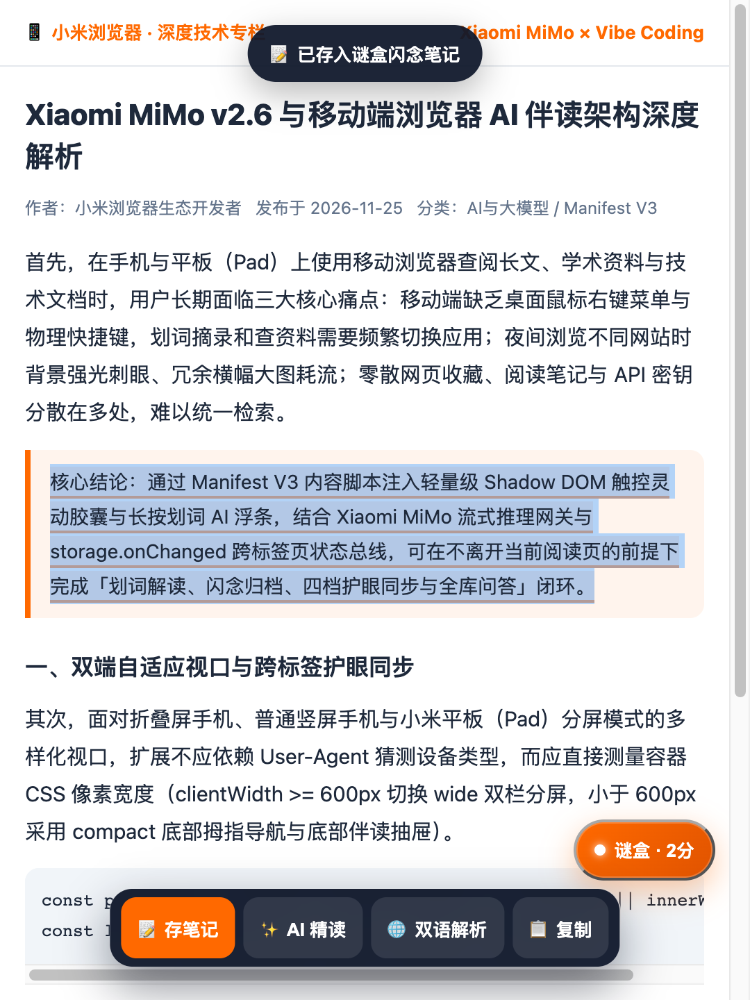
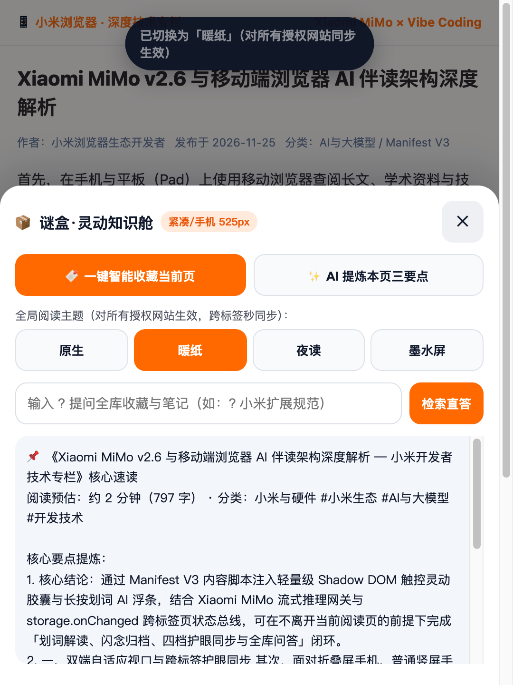
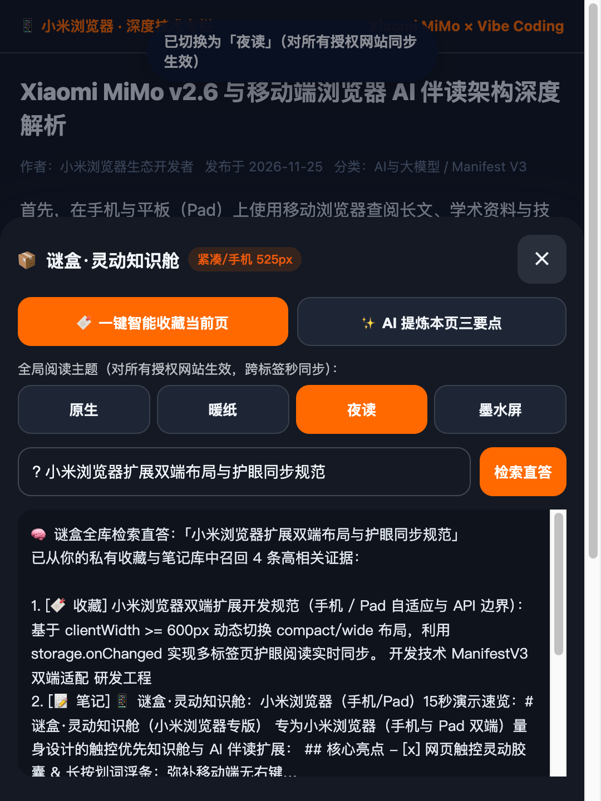
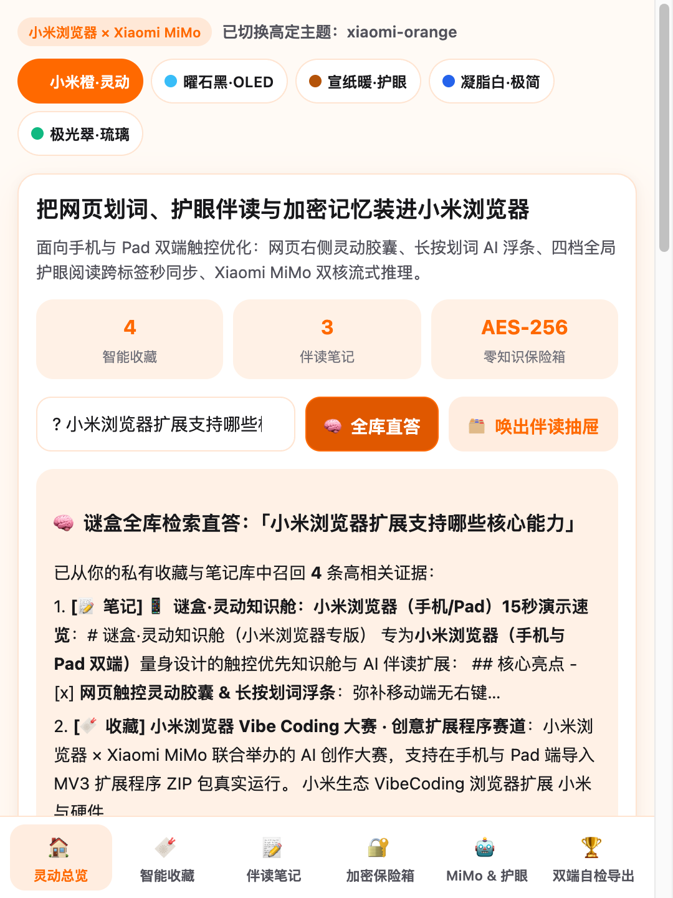
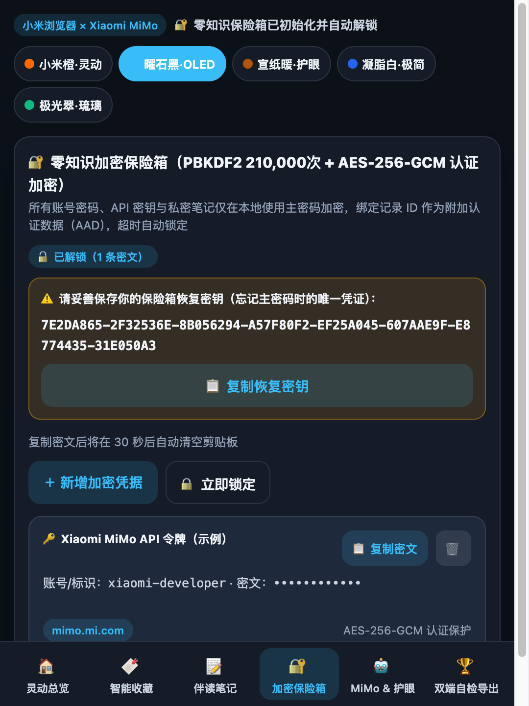
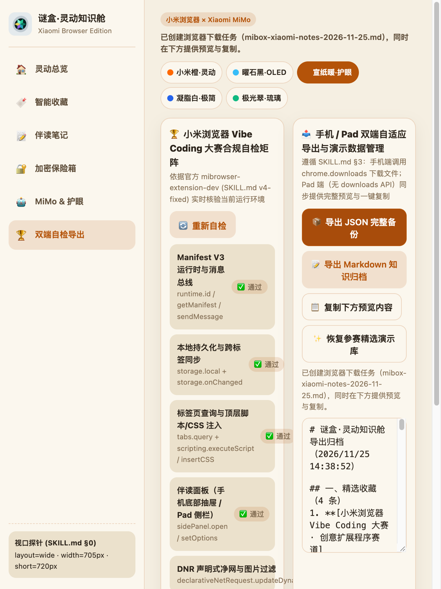

长按网页划词弹出 AI 浮条 & 贴边灵动胶囊
在小米浏览器阅读深度文章时，手指选中核心段落即弹出「📝 存笔记 / ✨ AI 精读 / 🌐 双语解析 / 📋 复制」44px 高触控浮条，右下角悬浮橙色「谜盒 · 2分」灵动胶囊，顶部实时反馈归档成功。
mibox-xiaomi) · 参赛简介、核心优势与使用场景截图集本文档针对大赛活动页展示规则（扩展作品在活动页通过名称、描述、截图与演示视频向评委和投票用户呈现）以及官方 SKILL.md §6 提交自检要求（名称描述不超过 1000 字，权限、适用网站与功能说明一致）编写，可直接复制粘贴提交。
| 方案 | 名称文本 | 字数 | 定位说明 |
|---|---|---|---|
| 推荐主用 | 谜盒·灵动知识舱 |
8 字 | 既保留 Mibox「谜盒」品牌认知，又突出移动端「灵动胶囊 + 私有知识舱」核心场景，辨识度最高 |
| 备选 A | 谜盒·AI伴读知识舱 |
10 字 | 直接点明 AI 伴读与知识管理属性 |
| 备选 B | 谜盒Mibox灵动伴读 |
11 字 | 中英双品牌名结合，适合 GitHub 开源联动展示 |
兼顾投票用户的痛点共鸣与主办方特等奖评审四维指标，且严格包含 SKILL.md §6 要求的权限与全局作用范围说明：
【面向场景与核心价值】
在手机与平板上使用小米浏览器深度阅读、查资料时，用户常面临三大痛点：移动端没有桌面右键菜单与物理快捷键，划词摘录和查资料极不顺手；不同网页夜间强光刺眼、广告大图耗流；零散收藏、阅读笔记与私密账号分散在多处难以检索。
「谜盒·灵动知识舱」专为小米浏览器（手机与 Pad 双端）量身打造，将 AI 伴读、全局护眼净网、智能收藏、Markdown 闪念笔记与 AES-256-GCM 零知识加密保险箱融为一体，所有数据 100% 存储在用户本地设备。
【五大核心功能与优势】
1. 网页触控灵动胶囊与长按划词 AI 浮条：在授权网页右下角提供贴边灵动胶囊，实时估算阅读时长并一键唤出页内速查抽屉；手指长按选中网页文字即弹出 44px 高触控浮条，一键「存为笔记 / AI 精读 / 双语解析 / 复制」，彻底补齐移动端无右键菜单与快捷键的交互短板。
2. 四档全局护眼阅读跨标签秒同步 & DNR 净图：提供「原生 / 暖纸护眼 / 深色夜读 / 墨水屏」四档全局阅读主题与正文字号缩放（对所有授权网站生效），基于 storage.onChanged 实现多标签页毫秒级同步；内置 declarativeNetRequest 动态规则一键拦截网页冗余广告图片。
3. Xiaomi MiMo 首席预置 + 本地零配置双核 AI：预置 Xiaomi MiMo 大模型流式网关（兼容 DeepSeek/OpenAI/Claude），并内建零配置本地智能引擎——安装后无需配置 API Key 即可开箱提炼网页核心三要点、自动生成收藏一句话简介与分类标签，并支持输入「? 问题」对全库收藏与笔记进行检索直答。
4. 手机/Pad 双端自适应与五套高定皮肤：按容器宽度（600px 阈值）在手机底部拇指导航/底部伴读抽屉与 Pad 双栏分屏工作台间无缝切换；数据导出在手机端调用 downloads 下载文件，在 Pad 端自动提供实时预览与一键复制。
5. WebCrypto 零知识保险箱：采用 PBKDF2-SHA256（21 万次迭代）+ AES-256-GCM 加密保护密码与 API Key，支持 64 位恢复密钥重置、30 秒剪贴板自动清理与定时自动锁定。
【权限与适用范围说明】
本扩展使用 storage（本地存储与跨标签同步）、tabs/scripting（当前页摘要提取、可见页截图入笔记与护眼样式同步）、sidePanel（手机底部伴读抽屉/Pad侧栏）、alarms（保险箱自动锁定）、declarativeNetRequest（用户可选的净图过滤）及 downloads（手机端可选备份导出），适用于 http/https 网页。如果希望在活动页详情里让普通用户在 5 秒内看懂并投票，可使用此精炼版：
用小米浏览器看长文、查资料时，长按划词没法一键整理？夜间切网页白光刺眼？收藏的网页和密钥越攒越乱？
「谜盒·灵动知识舱」专为小米浏览器（手机与 Pad 双端）打造，给你的浏览器装上随叫随到的 AI 伴读与私有知识库：
1. 网页划词 AI 浮条 & 灵动胶囊：手指在网页长按选中文字，立即弹出「存笔记 / AI 精读 / 双语解析」浮条；点击右下角灵动胶囊，不离开当前网页即可提炼全文三要点、检索历史笔记。
2. 四档全局护眼秒同步：一键切换「暖纸护眼 / 深色夜读 / 墨水屏」与大字号（对所有授权网站同步生效），配合 DNR 省流净图拦截冗余广告大图。
3. Xiaomi MiMo 双核 AI + 零知识保险箱：首席预置 Xiaomi MiMo 流式大模型并自带零配置本地智能引擎，开箱即可自动生成收藏简介与「? 问题」全库直答；内置 AES-256-GCM 加密保险箱守护私密账号。
4. 手机/Pad 双端自适应：自动识别手机竖屏与小米平板分屏布局，配备小米橙、曜石黑等五套高定主题，数据 100% 留存本机。【一、立项背景与移动端场景痛点】
桌面浏览器扩展习惯依赖鼠标右键菜单（contextMenus）与物理键盘快捷键（如 Ctrl+K），但移植到小米浏览器（手机与 Pad 端）后交互全部失效。同时，移动阅读迫切需要跨站点一致的护眼排版、低延迟 AI 伴读摘要以及不依赖云端服务器的本地隐私存储。「谜盒·灵动知识舱（mibox-xiaomi）」为此完全重构了移动端触控交互链路。
【二、五大技术与体验优势】
1. 页内 Shadow DOM 触控交互层（零样式污染）：通过 content_scripts 注入开放式 Shadow DOM 宿主，提供右下角贴边「灵动胶囊（实时计算预计阅读分钟数）」与「长按划词 AI 浮条（所有触控热区 >= 44px）」。用户在任意网页手指划词即可一键归档 Markdown 笔记（自动绑定来源标题、URL 与时间戳）或唤出底部抽屉进行 AI 语境拆解。
2. 全局阅读主题跨标签总线与 DNR 动态净网：采用正文容器白名单选择器（不破坏网页按钮与输入框），提供「原生 / 暖纸护眼 / 深色夜读 / 墨水屏」四档全局阅读主题与 100%~130% 字号缩放（对所有授权网站生效）。严格遵循「popup/抽屉触发 → Service Worker 写入 storage.local → storage.onChanged 广播所有匹配标签页 → tabs.sendMessage 确认当前页应用状态」闭环；集成 declarativeNetRequest.updateDynamicRules 动态拦截干扰广告图片。
3. Xiaomi MiMo 首席预置 + 零配置本地双核 AI 架构：预置 Xiaomi MiMo（mimo-v2.6）真 SSE 流式推理网关（兼容 DeepSeek/OpenAI/Anthropic），同时内建基于关键句评分与领域词典的零配置本地智能引擎。评委与用户导入 ZIP 后无需配置任何 API Key 即可 100% 开箱体验网页三要点提炼、三行信息卡智能摘要分类及「? 问题」全库检索直答；配置 Key 后无缝升级为云端流式生成。
4. 手机（compact）与 Pad（wide）容器宽度自适应架构：不使用 UA 猜测端类型，动态测量 document.documentElement.clientWidth（600px 阈值）并监听旋转与平板分屏。小于 600px 采用底部拇指导航与底部伴读抽屉（sidePanel），Popup 遵循 min-width: min(280px, 100vw)、max-width: 420px；大于等于 600px 自动切换双栏主从分屏工作台。针对双端 API 差异，手机端调用 chrome.downloads 导出备份文件，Pad 端（无 downloads API）自动降级为页内实时预览与一键复制。
5. WebCrypto 零知识加密保险箱：基于原生 SubtleCrypto 实现 210,000 次 PBKDF2-SHA256 密钥派生与 AES-256-GCM 认证加密（绑定记录 ID 为 AAD 防止密文替换），支持 64 位十六进制恢复密钥重置、30 秒剪贴板自动清空与 alarms 定时自动锁定。
【三、权限与适用范围声明】
声明 storage、tabs、scripting、sidePanel、alarms、declarativeNetRequest、downloads 权限，作用于 http://*/* 与 https://*/* 授权网页，无任何远程代码或第三方统计。| 大赛评审维度 | 官方评分关注点 | 谜盒·灵动知识舱 (mibox-xiaomi) 竞争优势与可验证证据 |
|---|---|---|
| 1. 功能可用性 | 在小米浏览器（手机或 Pad）真实安装即用，无未捕获异常，未配第三方账号也不卡死 | 零配置开箱满血可用：首次安装自动初始化「小米浏览器参赛精选知识库」（4 条精选收藏 + 2 篇结构化 Markdown 笔记），且内建本地零配置智能引擎，评委不填任何 API Key 即可测通网页三要点提炼、划词精读、护眼同步、全库问答与加密保险箱。 |
| 2. 题材创新性 | 契合移动浏览器触控场景与 Xiaomi MiMo AI 生态，非桌面扩展简单照搬 |
专为手机/Pad 触控重构的「页内灵动胶囊 + 划词 AI 浮条 + 底部伴读抽屉」三合一交互，并将大赛联合主办方 Xiaomi MiMo (mimo-v2.6) 设为首席预置 AI 引擎，直接解决手机浏览器「划词难、夜读刺眼、碎片信息难检索」三大高频刚需。
|
| 3. 呈现效果 | 视觉质感、手机窄屏与 Pad 分屏排版、触控热区与主题完成度 |
内置五套高定主题皮肤（小米橙·灵动、曜石黑·OLED、宣纸暖·护眼、凝脂白·极简、极光翠·琉璃），所有按钮严格 min-height: 44px，根据 clientWidth >= 600px 在手机底部导航与 Pad 双栏工作台间丝滑切换。
|
| 4. 技术难度 | MV3 架构深度、跨上下文通信严谨性、双端 API 兼容与安全加密实现 |
零第三方运行时依赖，纯原生实现 WebCrypto PBKDF2 (210,000次) + AES-256-GCM 零知识保险箱（含 AAD 绑定与 64 位恢复密钥）、Shadow DOM 页内伴读抽屉、declarativeNetRequest 动态净图规则、tabs.captureVisibleTab 可见页快照入笔记及手机 downloads / Pad 预览复制双模自适应导出。
|
1080×1440，均 ≤ 2MB）以下 6 张实景截图均按大赛规范（JPG/PNG/WebP、≤ 2MB、3:4 竖版 1080×1440）生成，覆盖从「网页阅读划词」到「全屏知识舱与 Pad 分屏」的完整使用闭环：

在小米浏览器阅读深度文章时，手指选中核心段落即弹出「📝 存笔记 / ✨ AI 精读 / 🌐 双语解析 / 📋 复制」44px 高触控浮条，右下角悬浮橙色「谜盒 · 2分」灵动胶囊，顶部实时反馈归档成功。

点击网页右下角灵动胶囊，底部滑出页内知识舱抽屉：一键开启「暖纸」全局护眼主题（网页正文实时变为柔和暖纸色），并由内置 AI 双核引擎即刻提炼出当前文章的 3 条核心要点与一句话结论。

? 全库直答夜间阅读时切换至「夜读」模式，所有已打开的匹配网页通过 storage.onChanged 毫秒级同步为低眩光暗色背景；无需离开当前网页，在抽屉内输入 ? 问题 即可召回私有收藏与笔记证据直接作答。

在手机竖屏（compact < 600px）下自动采用底部 6 栏拇指导航，顶部支持一键切换「小米橙·灵动 / 曜石黑·OLED / 宣纸暖·护眼 / 凝脂白·极简 / 极光翠·琉璃」五套皮肤，集中管理智能收藏与伴读笔记。

在「曜石黑·OLED」主题下使用主密码初始化并解锁零知识保险箱，自动生成 64 位十六进制恢复密钥，对 Xiaomi MiMo API 令牌与网站密码进行绑定记录 ID (AAD) 的本地认证加密，复制后 30 秒自动清空剪贴板。

当容器宽度 >= 600px（如小米 Pad 或折叠屏展开）时自动切换为左侧边栏 + 双栏主从工作台；实时展示 7 项小米浏览器 API 兼容性自检全绿通过，并提供兼容 Pad 端的 Markdown 知识归档实时预览与一键复制。